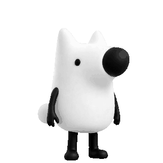

你忙你的，我陪着你。
打开观察，或选一个现在的状态。

单击陪伴 · 双击练习 · 三击知乎
仅本机分析 · 不录像、不上传
陪伴设置
让头、肩膀入镜。摄像头只能推测姿态；低头看书也可能被归为书写。
两种姿势各校准一次，可减少误判。
摄像头预览（不保存）
打开观察，或选一个现在的状态。

单击陪伴 · 双击练习 · 三击知乎
仅本机分析 · 不录像、不上传
让头、肩膀入镜。摄像头只能推测姿态；低头看书也可能被归为书写。
两种姿势各校准一次，可减少误判。
绑定你能打开的知乎「喜欢」页面链接，之后可一键直达。
当前网页版尚未核实统一的喜欢列表地址。此入口独立于收藏夹。
在浏览器中打开 · 个人内容需登录知乎该活动一下啦，点「回到看山」休息